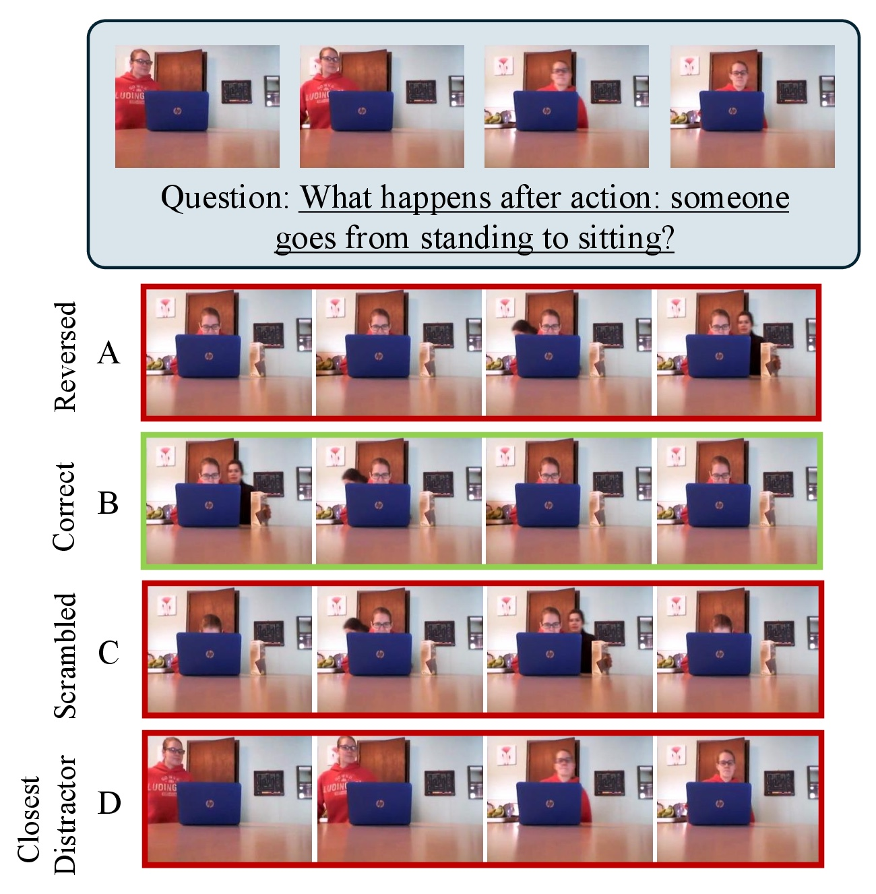
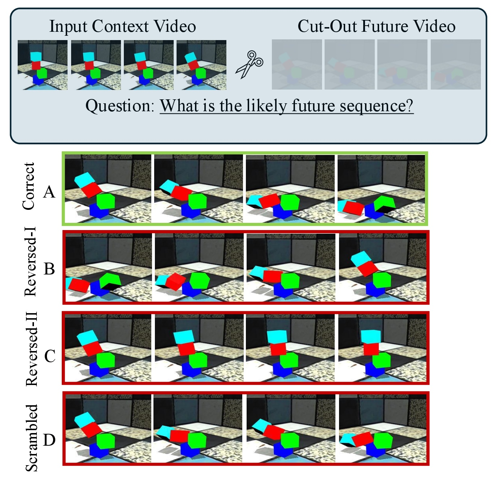
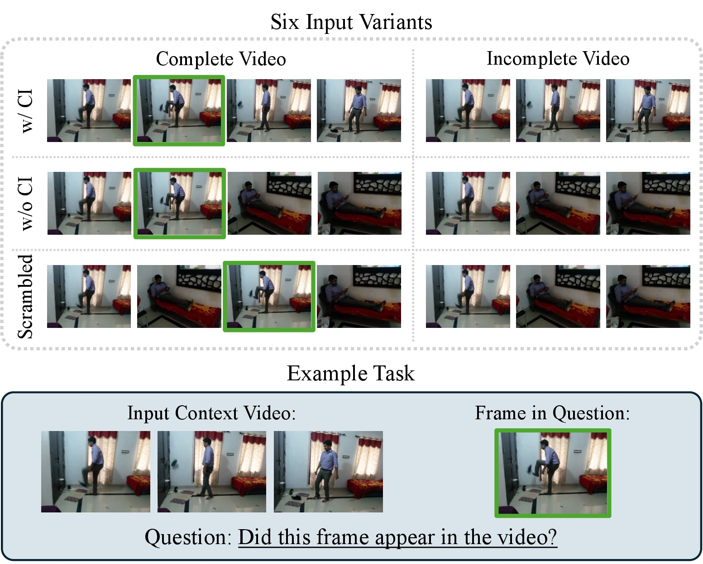

Large video models have exhibited impressive performance on a wide range of visual question answering tasks, owing to the rise of powerful, pretrained text and vision encoders. The usefulness of such models have also been demonstrated on a wide range of benchmarks, with an important caveat – the dominant approach in these benchmarks evaluates multiple choice reasoning via text options. This is a natural way to test text-based reasoning in these models, and has led to significant insights regarding model behavior in the community.
In this work, we ask a different question – what happens when the evaluation modality is visual, rather than text? We introduce three new vision-centric evaluation benchmarks in temporal frame retrieval, video future prediction, and causal memory distortion, all designed around evaluating visual understanding capabilities in large video models. Our approach complements the existing approaches to evaluate video understanding in frontier models. We show that current frontier models exhibit significant weakness when attempting to reason through visual queries, rather than text. We conclude with an extended analysis section that provides pointers for future improvements in visual understanding for large video models.
This task evaluates a model’s ability to understand temporal context in video. Given a video clip and an anchor action as input, the model is required to select the correct frames that occur either before or after the anchor action from a set of candidate frames. The task is purely visual: the model is required to select among visual options, not text.
This task evaluates a model’s ability to predict future events in a video from past context. Given a video clip in which only an initial frame segment is visible (i.e. only a truncated video as input), the model must select the correct future frames from a set of candidate segments. This is different from the retrieval task, since the model does not have access to the entire video clip to make the decision. Instead, it has to reason based on the truncated context it receives as input.


This task is inspired by an influential cognitive science experiment by Strickland and Keil (2011), which studies how humans form false memories about causal events in videos. In their setup, a video sequence contains a clear contact moment (e.g., kicking something or throwing something). The video is then slightly altered to remove the contact moment, but subjects are shown a candidate “contact moment” frame from the original video. The study found that humans often falsely report having seen the contact moment in the altered video, effectively “hallucinating”, when the remaining footage causally implies the missing contact. Interestingly, this hallucination tendency in humans is less likely if the remaining footage does not causally follow the contact moment (e.g., footage of a ship sailing following the footage of a person about to kick a ball).
To the best of our knowledge, we are the first to adapt this idea to curate a dataset that evaluates models’ ability to detect causal inconsistencies in video sequences, i.e. evaluating whether models can indeed stay robust when contact frames are removed with causal implication, as opposed to when they are not. We use the term “causal memory distortion” as the phenomenon when models exhibit similar hallucination about the removed “contact” frame.

Table 1. Accuracy (%) across the three tasks. Best result per column in bold. The causal memory distortion task is binary (“yes”/“no”), hence the 50% random baseline. The other two tasks have four choices each, hence the 25% random baseline.
| Model | Temporal Frame Retrieval |
Future Prediction |
Causal Memory Distortion |
|---|---|---|---|
| Random Baseline | 25.00 | 25.00 | 50.00 |
| Human | 44.00 | 80.00 | 80.00 |
| LLaVA-OV-72B | 23.62 | 25.75 | 52.00 |
| Qwen2.5-32B | 24.71 | 33.44 | 55.00 |
| Qwen2.5-72B | 25.83 | 31.70 | 60.00 |
| mPLUG-Owl3 | 17.69 | 17.40 | 51.70 |
| Qwen3-32B | 21.57 | 41.80 | 50.00 |
| InternVL3-72B | 21.48 | 25.80 | 50.00 |
| GLM-4.6V | 29.78 | 32.44 | 51.70 |
| Gemini-2.5-Pro | 30.00 | 69.62 | 58.00 |
| Kimi-K2.6 | 33.45 | 28.43 | 58.33 |
| GLM-5V-Turbo | 23.87 | 24.08 | 55.00 |
We find that large frontier video models perform quite poorly under direct visual evaluation. In most cases, performance is close to or only slightly above chance, the exception being Gemini-2.5-Pro on Video Future Prediction (Shapestacks). This indicates that visual querying diagnoses model failures that traditional text-based benchmarks may not. However, text-based evaluation remains a key component of VQA, so we view our work as complementary to it rather than as a replacement.
The main limitation of our dataset is its size, and we plan to increase the number of samples considerably in the future. We also plan to add a representation-level analysis to this work, since the models’ internal behavior on these tasks is currently treated as a black box.
@misc{chakraborty2026textbenchmarkputtingvisual,
title={Not Another Text Benchmark: Putting the "Visual" Back in Visual Question Answering for Large Video Models},
author={Rwiddhi Chakraborty and Yinong Oliver Wang and Cheng Zhang and Fan Bai and Zhuoran Yu and Michael Kampffmeyer and Yong Jae Lee and Fernando De la Torre and Robert Jenssen},
year={2026},
eprint={2609.17112},
archivePrefix={arXiv},
primaryClass={cs.CV},
url={https://arxiv.org/abs/2609.17112},
}